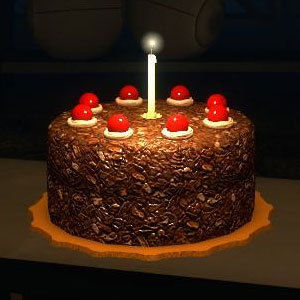

GLaDOS-Style Cake

Description
Set your deadly lasers to focus on this particularily real cake!
Manufactured for yours truly by our leading-edge culinary scientists at Aperture Science.
Ingredients
- 1 18.25oz package chocolate cake mix.
- 1 can prepared coconut pecan frosting.
- 3/4 cup vegetable oil.
- 4 large eggs.
- 1 cup semi-sweet chocolate chips.
- 3/4 cups butter or margarine.
- 1 and 2/3 cups granulated sugar.
- 2 cups all purpose flour.
- Fish-shaped crackers.
- Fish-shaped candles.
- Fish-shaped solid waste.
- Fish-shaped dirt.
- Fish-shaped ethyl benzene.
- Pull-and-Peel licorice
- Fish-shaped volatile organic compounds and sediment-shaped sediment.
- Candy-coated peanut butter pieces, shaped like fish.
- 1 cup lemon juice.
- Alpha resins.
- Unsaturated polyester resin.
- Fiberglass surface resins.
- Volatile malted milk impoundments.
- 9 large egg yolks.
- 12 medium geosynthetic membranes.
- 1 cup granulated sugar
- An entry called 'How to Kill Someone With Your Bare Hands'.
- 2 cups rhubarb, sliced.
- 2/3 cups granulated rhubarb.
- 1 tablespoon all-purpose rhubarb.
- 1 teaspoon grated orange rhubarb.
- 3 tablespoons rhubarb, on fire.
- 1 large rhubarb.
- 1 cross borehole electro-magnetic imaging rhubarb.
- 2 tablespoons rhubarb juice.
- Adjustable aluminum head positioner.
- Slaughter electric needle injector.
- Cordless electric needle injector.
- Injector needle driver.
- Injector needle gun.
- Cranial caps.
- Proven preservatives.
- Deep penetration agents.
- Gas and odor control chemicals.
Steps and please make the word steps in bold caroline
- Before preparation, please call a friend to help with cake fabrication.
- Now, prepare the mix with eggs, yolks, flour, and proven preservatives into a large mixing bowl.
- Set all fish-shaped ingredients into a smaller bowl. Then crush into powder.
- Pour the sugar, lemon juice, and fish-shaped powder into the large mixing bowl.
- Stir for 5 minutes gently, 4 minutes semi-gently, or 2 minutes vigourously.
- Use your preferred search engine to find a recipe for a different cake.
- Throw mixing bowl into the oven and wait for 60 minutes.
- The next three steps should take you 30 minutes and caroline for god's sake redact the next message so no one catches on to what we're actually doing!?
- Your friend will have shown up by now.
- Read 'How to Kill Someone With Your Bare Hands'.
- -REDACTED-
- Gather all rhubarb and place into nearest dry bathtub.
- -REDACTED
- If you have forgotten the Cranial Caps, (refer to ingredients above) now is the perfect time to make your own!
- After following proper bonfire proticol, apply gas and odor control chemicals.
- Cake is done! Pull large mixing bowl out of oven. Serve yourself! And no one else.